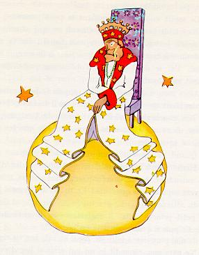

在附近的宇宙中，还有 325、326、327、328、329、330等几颗小行星。他就开始访问这几颗星球，想在那里找点事干，并且学习学习。
第一颗星球上住着一个国王。国王穿着用紫红色和白底黑花的毛皮做成的大礼服，坐在一个很简单却又十分威严的宝座上。

当他看见小王子时，喊了起来：
“啊，来了一个臣民。”
小王子思量着：“他从来也没有见过我，怎么会认识我呢？”
他哪里知道，在那些国王的眼里，世界是非常简单的：所有的人都是臣民。
国王十分骄傲，因为他终于成了某个人的国王，他对小王子说道：“靠近些，好让我好好看看你。”
小王子看看四周，想找个地方坐下来，可是整个星球被国王华丽的白底黑花皮袍占满了。他只好站在那里，但是因为疲倦了，他打起哈欠来。
君王对他说：“在一个国王面前打哈欠是违反礼节的。我禁止你打哈欠。”
小王子羞愧地说道:“我实在忍不住,我长途跋涉来到这里,还没有睡觉呢。”
国王说：“那好吧，我命令你打哈欠。好些年来我没有看见过任何人打哈欠。对我来说，打哈欠倒是新奇的事。来吧，再打个哈欠！这是命令。”
“这倒叫我有点紧张…我打不出哈欠来了…”小王子红着脸说。
“嗯！嗯！”国王回答道：“那么我…命令你忽而打哈欠，忽而…”
他嘟嘟囔囔，显出有点恼怒。
因为国王所要求的主要是保持他的威严受到尊敬。他不能容忍不听他的命令。他是一位绝对的君主。可是，他却很善良，他下的命令都是有理智的。
他常常说：“如果我叫一位将军变成一只海鸟，而这位将军不服从我的命令，那么这就不是将军的过错，而是我的过错。”
小王子腼腆地试探道：“我可以坐下吗？”
“我命令你坐下。”国王一边回答，一边庄重地把他那白底黑花皮袍大襟挪动了一下。
可是小王子感到很奇怪。这么小的行星，国王他对什么进行统治呢？
他对国王说：“陛下…请原谅，我想问您…”
国王急忙抢着说道：“我命令你问我。”
“陛下…你统治什么呢？”
国王非常简单明了地说：“我统治一切。”
“一切？”
国王轻轻地用手指着他的行星和其他的行星，以及所有的星星。
小王子说：“统治这一切？”
“统治这一切。”
原来他不仅是一个绝对的君主，而且是整个宇宙的君主。
“那么，星星都服从您吗？”
“那当然！”国王对他说，“它们立即就得服从。我是不允许无纪律的。”
这样的权力使小王子惊叹不已。如果掌握了这样的权力，那么，他一天就不只是看到四十三次日落，而可以看到七十二次，甚至一百次，或是二百次日落，也不 必要去挪动椅子了！由于他想起了他那被遗弃的小星球，心里有点难过，他大胆地向国王提出了一个请求：
“我想看日落，请求您…命令太阳落山吧…”
国王说道：“如果我命令一个将军象一只蝴蝶那样从这朵花飞到那朵花，或者命令他写作一个悲剧剧本或者变一只海鸟，而如果这位将军接到命令不执行的话， 那么，是他不对还是我不对呢？”
“那当然是您的不对。”小王子肯定地回答。
“一点也不错，”国王接着说，“向每个人提出的要求应该是他们所能做到的。权威首先应该建立在理性的基础上。如果命令你的老百姓去投海，他们非起来革 命不可。我的命令是合理的，所以我有权要别人服从。”
“那么我提出的日落呢？”小王子一旦提出一个问题，他是不会忘记这个问题的。
“日落么，你会看到的。我一定要太阳落山，不过按照我的统治科学，我得等到条件成熟的时候。”
小王子问道：“这要等到什么时候呢？”
国王在回答之前,首先翻阅了一本厚厚的日历,嘴里慢慢说道：“嗯！嗯！日落大约…大约…在今晚七时四十分的时候！你将看到我的命令一定会被服从的。”
小王子又打起哈欠来了。他遗憾没有看到日落。他有点厌烦了，他对国王说：“我没有必要再呆在这儿了。我要走了。”
这位因为刚刚有了一个臣民而十分骄傲自得的国王说道：
“别走，别走。我任命你当大臣。”
“什么大臣？”
“嗯……司法大臣！”
“可是，这儿没有一个要审判的人。”
“很难说呀，”国王说道。“我很老了，我这地方又小，没有放銮驾的地方，另外，一走路我就累。因此我还没有巡视过我的王国呢！”
“噢！可是我已经看过了。”小王子说道，并探身朝星球的那一侧看了看。
那边也没有一个人…
“那么你就审判你自己呀！”国王回答他说。“这可是最难的了。审判自己比审判别人要难得多啊！你要是能审判好自己，你就是一个真正有才智的人。”
“我吗，随便在什么地方我都可以审度自己。我没有必要留在这里。”
国王又说：“嗯…嗯…我想，在我的星球上有一只老耗子。夜里，我听见它的声音。你可以审判它，不时地判处它死刑。因此它的生命取决于你的判决。可是, 你要有节制地使用这只耗子,每次判刑后都要赦免它,因为只有这一只耗子。”
“可是我不愿判死刑，我想我还是应该走。”小王子回答道。
“不行。”国王说。
但是小王子，准备完毕之后，不想使老君主难过，说道：
“如果国王陛下想要不折不扣地得到服从，你可以给我下一个合理的命令。比如说，你可以命令我，一分钟之内必须离开。我认为这个条件是成熟的…”
国王什么也没有回答。起初，小王子有些犹疑不决，随后叹了口气，就离开了…
“我派你当我的大使。”国王匆忙地喊道。
国王显出非常有权威的样子。
小王子在旅途中自言自语地说：“这些大人真奇怪。”